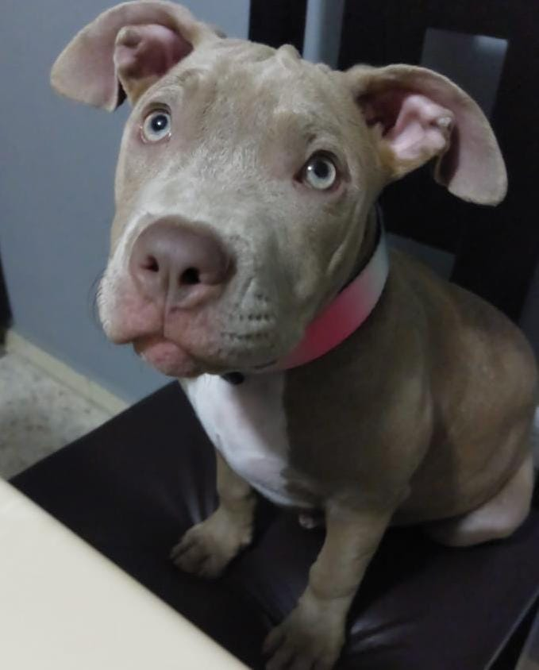

Biografía
Me llamo Giovanny tengo 19 años, nací en Ciudad Madero el 28 de enero del 2006, tengo un hermano mayor y soy el menor de mi familia. Estudie el kinder en el jardín de niños bilingüe "Lulú", en primaria estuve en dos escuelas diferentes en la "Emeregildo Galeana" y en la "Expropiación petrolera". En secundaria estudie en la "Melchor Ocampo" y en la prepa estuve en el "Icest, campus Madero". Tengo 2 perritas llamadas Leia y Africa, las dos son raza pitbull, Leia tiene diversos nombres y a todos responde, entre esos esta "Lia" y "Olivia". También es muy juguetona y activa, le gusta morder todo y a todos así como molestar a África. África es más tranquila, ella si solo tiene un nombre y ya esta viejita, pero le gusta jugar con Leia aunque a veces terminen peleando. Desde pequeño me han gustado los videojuegos también todo lo que tenga que ver con computadoras y tecnología en general, siento que en parte por eso elegí la carrera de ingeniería en sistemas. Mis sagas de vdeojuegos favoritos son "Dark Souls", "Red Dead Redemption", "Halo", "The last of us" y "Zelda", también mi saga favorita de peliculas es "Star Wars". También me gusta ver series y leer algunos mangas, mis favoritos son "Jojo's" y "Berserk" 
Videojuegos Favoritos
- .Dark Souls: Por su desafío y lore profundo.
- .Red Dead Redemption: Por su narrativa épica y mundo abierto.
- .Halo: Por su acción de ciencia ficción.
- .The Last of Us: Por su fuerte historia y desarrollo de personajes.
- .The Legend of Zelda: Por su aventura y exploración.
Además, me apasiona la saga de películas de Star Wars.
Mis Mascotas
Tengo dos perritas pitbull a las que adoro:
- .Leia: Es la juguetona y llena de energía.
- .Africa: Es la más floja y tranquila.